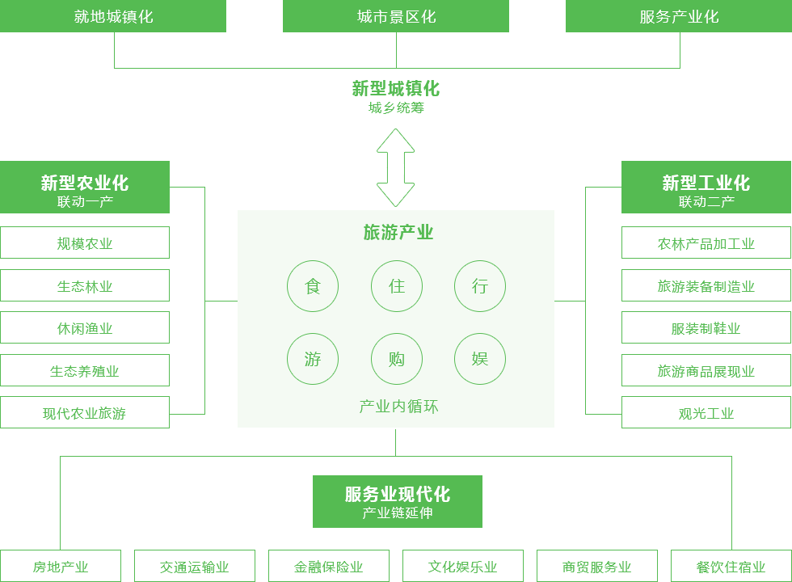
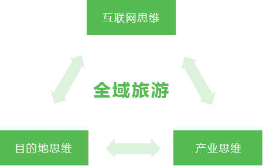

全域旅游的背景
为什么？
时代在召唤
时代背景
全域城市化的“大战略”
党的十七大指出：“按照统筹城乡、布局合理、节约土地、功能完善、以大带小的原则，促进大中小城市和小城镇协调发展。”。
顶层设计的“大政策”
《国务院关于加快发展旅游业的意见》提出，要把旅游业培育成“国民经济的战略性支柱产业”和“人民群众更加满意的现代服务业”。
景区泛化的“大旅游”
传统景区已满足不了旅游休闲的要求。
旅游者可选择的旅游空间更加广阔。
传统的观光旅游被突破。
国民休闲的“大市场”
国务院颁布《国民旅游休闲纲要（2013-2020年）》。
传统景区化的发展模式难以满足游客多元化需求。
产业升级的“大产业”
国家统计局发布的数据显示，2013年中国第三产业增加值占国内生产总值比重为46.1%，首次超过第二产业。
产业在期待
- 低能耗：旅游业万元产值能耗约为全国单位GDP能耗的1/6和单位工业增加值能耗的1/11。
- 强拉动：旅游业每直接收入1元，相关产业收入就能增加4.3元；旅游消费已成为居民普遍消费和推动消费升级的主渠道之一。
- 增就业：2013年，旅游业直接间接就业总人数为6441万人，占全国就业总人数的8.4%。
一业驱四化，旅游注活力
业界在探讨
政界：
- 全域旅游是把一个区域整体当作旅游景区，是空间全景化的系统旅游，是跳出传统旅游谋划现代旅游、跳出小旅游谋划大旅游，是旅游发展理念、发展模式上的根本性变革。
―― 李金早
- 通过增加基础设施投入，打造苗族特色旅游项目，公路直通到村，全村都有wifi，处处都有看点，让美丽乡村游在即使偏远的地方也能红火。
―― 海南省省长刘赐贵
学界：
- 全域旅游有四个方面：一个是生态圈的问题，强调共性，强调是伙伴关系而不是配置关系；第二是产权束，强调的是共享性，不求所有，而是共有；第三是动态性，通过灵活的方式来推动创新；第四是关系图，是网状的关系，是“旅游+”不是“旅游含”。
―― 厉新建
- 全域旅游是一种发展新模式新战略、一种旅游目的地新形态新品牌、一种新的综合改革平台和载体、一种新的复合型空间和新的发展趋势和方向。
―― 石培华
- 推动城市、产业、旅游三者的融合发展，全域旅游就找到了破解的路径。
―― 张辉
商界：
- “互联网+”让旅游产业从消费互联网时代进入产业互联网时代，旅游业正在进行全面的三大重构：市场与人心的重构，旅游产业的重构及旅游投资的重构，比拼的是价值创新、产品至上、服务为王、共生经济。竞争的核心将回归产业链的核心，就是要回归到资源--渠道--服务全产业链的协同、整合与竞争能力。
―― 洪清华
- 全域旅游是一个全产业融合、全资源融合、全民融合的大融合产业，做全域旅游，其实就是做一个精品的旅游目的地，做一个淡化门票的大景区。全域旅游不仅是整合性产品、创造性产品，更是时间性产品。
―― 韩吉飞
是什么？
游器“全域旅游”观点
综合各界观点及对全域旅游发展的认识误区辨析，游器对于全域旅游的认知：
全域旅游是指导旅游产业结构转变的战略理念，其核心理念是旅游业不能单一发展或孤立发展，一个旅游目的地应充分合理规划利用本地旅游资源，并有效地和其他产业融合，建设一个可吸引旅游者长时间逗留，产生较高消费，并能提高当地居民生活质量的旅游城镇。

- 产业转型的涡轮增压
- 供给侧改革的理想状态
- 城镇化更新的创新驱动
全域旅游的误区辨析
对于全域旅游发展的认识误区：
全域旅游 ≠ 景点景区、宾馆饭店泛滥
全域旅游更加关注景点景区、宾馆酒店等建设的系统性和规划布局的合理性。
全域旅游 ≠ 到处进行旅游开发
全域旅游将最终实现设施、要素、功能在空间上的合理布局和优化配置。
全域旅游 ≠ 所有地区都有条件在近期实行
全域旅游要分步推进。
全域旅游 ≠ 复制克隆
推进全域旅游要因地制宜，突出特色。
全域旅游 ≠ 无序而为
全域旅游要通过重点创建全域旅游示范县（市、区）、全域旅游示范市（州）、全域旅游示范省（区、市）进行示范引导。
全域旅游的相关概念
全域5A
运用建设5A级景区的规划理念及标准来美化优化全域风貌，将全域建设成风景优美、城市乡村呈现景区化的风情、景观和环境，拥有景区化的绿道、资源和产品，具备景区化的业态、服务和文化。
泛旅游产业
指超出观光、休闲、度假等传统旅游概念的更加泛化的旅游产业概念，是为人们提供具备趣味性、艺术性、知识性、刺激性等特性的体验消费的一系列产业的总称。
目的地旅游
指不限制游客所在地，自行选择合适的时间及合适的出行交通工具，到达任意想要游玩的地点。行程结束后，可根据自身情况调整行程，自行安排返回交通工具的旅游形式。
无景点旅游
指人们为了放松休闲、愉悦身心，不以游览景区景点为目的，而是以享受旅途本身为目的，以随性而游、兴尽而返方式进行的一种自助旅游方式。